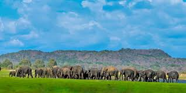
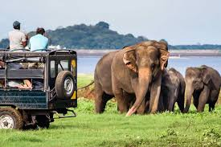
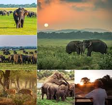

Minneriya National Park
 
Minneriya National Parkis a national park in North Central Province of Sri Lanka.
The area was designated as a national park on 12 August 1997, having been originally declared as a wildlife sanctuary in 1938.
The reason for declaring the area as protected is to protect the catchment of Minneriya tank and the wildlife of the surrounding area.
The tank is of historical importance, having been built by King Mahasen in third century AD.
The park is a dry season feeding ground for the elephant population dwelling in forests of Matale, Polonnaruwa, and Trincomalee districts.
The park earned revenue of Rs. 10.7 million in the six months ending in August 2009.
Along with Kaudulla and Girithale, Minneriya forms one of the 70 Important Bird Areas (IBAs) of Sri Lanka.
The park is situated 182 kilometres (113 mi) from Colombo.
The area is situated in dry zone of Sri Lanka and receives an average rainfall of 1,500–2,000 millimetres (59–79 in).
The lowest temperature and highest of the park are 20.6 °C (69.1 °F) and 34.5 °C (94.1 °F) respectively.
The main sources of water for the tank are a diversion of Amban River and Elahera canal.
The wet season lasts during the north eastern monsoon from October to January and from May to September considered as the dry season.
The main habitats of Minneriya are of several types, including low-canopy montane forests,
intermediate high-canopy secondary forests, scrublands, abandoned chena lands, grasslands, rocky outcrops, and wetlands.
 Location (Minneriya National Park)